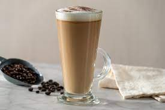
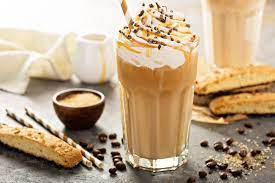

CAFE LATTE
4 pasos a seguir para preparar Caffè Latte:

CAFE FRAPPE
4 pasos a seguir para preparar Caffè frappe

CAFE EXPRESSO
Paso para preparar Caffè expresso

4 pasos a seguir para preparar Caffè Latte:
4 pasos a seguir para preparar Caffè frappe
Paso para preparar Caffè expresso